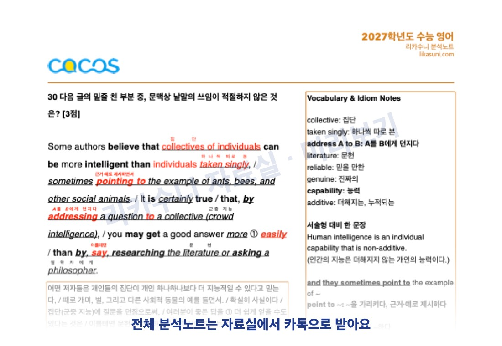

리카수니 분석노트 해설 · 이매동 코코스학원
2027 수능 영어 30번 어휘 해설·분석이에요. (2027학년도 대학수학능력시험 영어 30번 · 문맥상 낱말의 쓰임 · 3점 · 정답 ③ additive → non-additive, 2026년 11월 시행 수능)
정답 근거, 오답 거르는 법, 구문(only where · happen to · This is because · by + -ing), 어휘를 정리했고 분석노트 전자책·pdf 보는 곳은 글 아래에 있어요.
안녕하세요, 이매동 코코스학원 리카수니 원장입니다.
학생 요청으로 만든 분석노트를 바탕으로 정리했어요. 시험지를 옆에 펴 놓고 보시면 더 잘 보여요.
| 한눈에 보는 정답 · 시험: 2027학년도 대학수학능력시험 영어 (2026년 11월 시행) · 번호: 30번 (밑줄 친 부분 중 문맥상 낱말의 쓰임이 적절하지 않은 것, 3점) · 정답: ③ additive (더해지는) → non-additive (더해지지 않는) |
'집단이 개인보다 더 똑똑할 수 있다'는 주장의 한계를 다룬 글이에요.
흐름은 집단 지성 주장 → 군중에게 물으면 더 쉽게 답을 얻기도 함 → But 진짜 전문가가 있을 때만 믿을 만함 → 지능은 더해지지 않는 개인의 능력 → 집단은 대성당 짓기·학문 유지 같은 일은 하지만, 시·소설·발견·수학 문제는 주로 개인이 한다예요.
| · 근거 1: 집단 지성은 '진짜 전문가가 우연히 군중 속에 있을 때만(only where)' 믿을 만하게 통한다고 해요. · 근거 2: ③ 문장은 This is because 로 그 이유를 대요. 전문가가 있어야만 통하는 이유 = 지능은 사람 수만큼 합쳐지지 않는 개인의 능력이기 때문이에요. · 근거 3: 마지막에 창의적인 일은 주로 개인이나 아주 작은 집단이 한다고 마무리해요. → additive(더해지는)가 아니라 non-additive(더해지지 않는)가 맞아요. 정답 ③이에요. |
| · ① easily → 군중에게 물으면 문헌 조사보다 '더 쉽게' 답을 얻을 수도 있다는 인정이라 적절해요. · ② reliable → 전문가가 있을 때만 '믿을 만하게' 통한다는 조건이라 적절해요. · ④ collaboration → 학문 분야를 만들고 유지하는 데는 세대를 넘는 '협력'이 필요해서 적절해요. · ⑤ individuals → 창의적인 일은 주로 '개인'이 한다는 결론이라 적절해요. 낱말 쓰임 문제는 This is because 같은 '이유' 문장이 앞 문장과 방향이 맞는지 먼저 확인하세요. |

▲ 2027 수능 영어 30번 어휘 해설·분석 pdf 분석노트 미리보기
| 1) 과거분사 후치 수식 individuals taken singly (하나씩 따로 본 개인) / 분사구문 pointing to 2) 가주어 It ~ that / by + -ing / 삽입 say (이를테면) → by addressing a question to a collective (crowd intelligence), you may get a good answer more easily than by, say, researching the literature (2027 수능 30번) 3) only where ~ (~한 경우에만) / happen to V (우연히 ~하다) → this works in a reliable fashion only where some genuine expert happens to be in the crowd 4) This is because ~ / 주격 관계대명사 that 5) such as + 동명사 / 주격 관계대명사 that is involved in ~ 6) not A, B, or C (모두 부정) / 수동태 be done by |
| 영어 | 뜻 |
|---|---|
| collective | 집단 |
| taken singly | 하나씩 따로 본 |
| point to | ~을 근거·예로 제시하다 |
| address A to B | A를 B에게 던지다 |
| literature | 문헌 |
| reliable | 믿을 만한 |
| genuine | 진짜의 |
| capability | 능력 |
| additive | 더해지는, 누적되는 |
| cathedral | 대성당 |
| evolve | 발전시키다 |
| trial-and-error | 시행착오 |
| transgenerational | 세대를 넘는 |
| collaboration | 협력 |
| sustainment | 유지 |
| discipline | 학문 분야 |
| predominantly | 주로 |
| 서술형 대비 분석노트에 '서술형 대비 한 문장'(Human intelligence is an individual capability that is non-additive. 인간의 지능은 더해지지 않는 개인의 능력이다)과 영어 핵심 요약(Core Summary)을 해석과 함께 정리해 두었어요. happen to-v, point to 의 쓰임도 넣었어요. |
| 📂 2027 수능 영어 30번 분석노트 전자책·pdf 보는 법 자료실에서 이 문항 분석노트를 전자책으로 바로 볼 수 있어요. (끊어 읽기·해석·구문·어휘 2쪽) 인쇄용 pdf 는 카카오 로그인 후 카톡으로 받을 수 있고, 다른 번호도 요청할 수 있어요. 2027 수능 영어 분석노트·변형문제·단어, 전과목 문제지·정답 pdf, 등급컷은 같은 페이지 위쪽 회차 메뉴에서 볼 수 있어요. ▶ 2027 수능 영어 30번 해설·전자책 https://data.likasuni.com/suneung/2027/eng/30/ |
Q. 2027 수능 영어 30번 어휘 해설·분석 정답은?
A. ③ additive (더해지는) → non-additive (더해지지 않는)
Q. 분석노트 pdf 는 어디서 받나요?
A. 리카수니 자료실(data.likasuni.com)에서 카카오 로그인 후 카톡으로 받을 수 있어요. 위 안내의 링크로 이동하세요.
이상 2027 수능 영어 30번 어휘 해설·분석 pdf 정리였어요. 궁금한 점은 댓글로 남겨 주세요.
| 🏫 이매동 코코스학원 안내 분당 이매동 코코스학원은 초등·중등·고등 영어와 수학을 가르쳐요. 모의고사·수능특강·내신 대비가 궁금하시면 편하게 문의해 주세요. · 홈페이지: https://www.cocosedu.co.kr/ · 주소: 경기 성남시 분당구 판교로 476 2층 |
#2027수능영어 #2027수능영어30번 #2027수능영어분석 #수능영어30번 #수능영어pdf #2027수능영어해설 #2026수능영어 #2027학년도수능영어 #수능어휘 #낱말의쓰임 #additive #onlywhere #영어분석노트 #이매동영어학원 #코코스학원 #리카수니